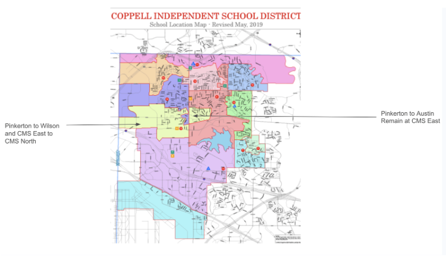

Old Coppell vs New Coppell
Historic land grants meet today’s community boundaries — tracing the evolution of Coppell through time.

Old Coppell Land Grants (Early 1900s)

Modern Coppell — ISD Zoning (2019)
Explore both Old and New Coppell through local landmarks.
Historic land grants meet today’s community boundaries — tracing the evolution of Coppell through time.